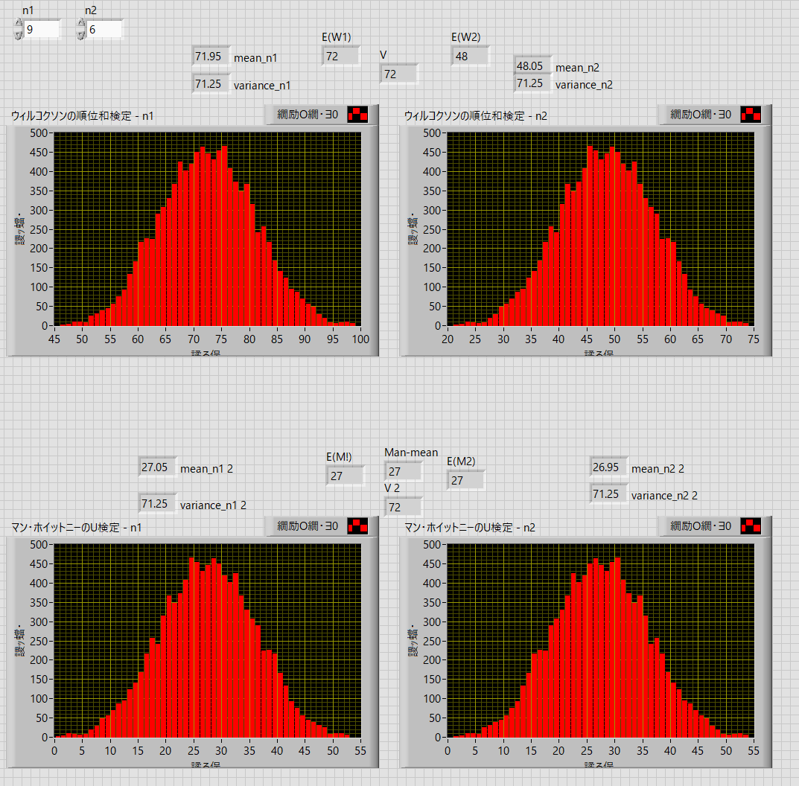

ウィルコクソンの順位和検定・マン・ホイットニーのU検定 - シミュレーション
実際に，シミュレーションしてみました．

上段 ：
・データ数が同じ場合
この結果を全体に対して順位を付与します．
| No. | A | B | ||
| 順位 | 順位 | |||
| 1 | 27 | 3 | 30 | 6 |
| 2 | 33 | 8 | 34 | 9 |
| 3 | 24 | 2 | 37 | 10 |
| 4 | 22 | 1 | 28 | 4 |
| 5 | 29 | 5 | 32 | 7 |
| n | 5 | 5 | ||
| R | 19 | 36 | ||
| U | 21 | 4 |
・ウィルコクソンの順位和検定
・A
\(\Large \displaystyle W_A= 3+8+2+1+5 = 19 \)
\(\Large \displaystyle E(W_A)= \frac{n_A ( n_A + n_B +1)}{2} = \frac{5 (5+5+1)}{2} = 27.5 \)
\(\Large \displaystyle V(W_A)= \frac{n_A \ n_B ( n_A + n_B +1)}{12} = \frac{5 \cdot 5 (5+5+1)}{12} = \frac{275}{12} = 22.92 \)
この結果からｚ値を求めます．
\(\Large \displaystyle z_A = \frac{W_A-E(W_A)}{\sqrt{V(W_A)}} = \frac{19-27.5}{\sqrt{22.92}} = -1.775 \)
標準正規分布における両側５％の範囲は，こちらに，記載しましたように，±1.96，となるので，
\(\Large \displaystyle -1.96 < \frac{W_A-E(W_A)}{\sqrt{V(W)}} < 1.96 \)
・B
\(\Large \displaystyle W_B= 6+9+10+4+7 = 36 \)
\(\Large \displaystyle E(W_B)= \frac{n_B ( n_A + n_B +1)}{2} = \frac{5 (5+5+1)}{2} = 27.5 \)
\(\Large \displaystyle V(W_B)= \frac{n_A \ n_B ( n_A + n_B +1)}{12} = \frac{5 \cdot 5 (5+5+1)}{12} = \frac{275}{12} = 2.92 \)
この結果からｚ値を求めます．
\(\Large \displaystyle z_B = \frac{W_B-E(W_B)}{\sqrt{V(W_B)}} = \frac{36-27.5}{\sqrt{22.92}} = 1.775 \)
と，A,Bそれぞれからのｚ値は符号が変わりますが，同じ値となります．
標準正規分布における両側５％の範囲は，こちらに，記載しましたように，±1.96，となるので，
\(\Large \displaystyle -1.96 < \frac{W_B-E(W_B)}{\sqrt{V(W)}} < 1.96 \)
なので，範囲内，つまり有意差があるとは限らないことになります．
・マン・ホイットニーのU検定
・A
\(\Large \displaystyle U_A = n_1 n_2 + \frac{n_1 (n_1 + 1)}{2} -R_1 = 5 \times 5 + \frac{5 (5+1)}{2} - 19 = 21 \)
\(\Large \displaystyle E(U)= \frac{ n_A n_B}{2} = \frac{5 \times 5}{2} = 12.5 \)
\(\Large \displaystyle V(U_A)= \frac{n_A \ n_B ( n_A + n_B +1)}{12} = \frac{5 \cdot 5 (5+5+1)}{12} = \frac{275}{12} = 22.92 \)
この結果からｚ値を求めます．
\(\Large \displaystyle z_A = \frac{U_A-E(U_A)}{\sqrt{V(W_A)}} = \frac{21-12.5}{\sqrt{22.92}} = 1.775 \)
・B
\(\Large \displaystyle U_B = n_1 n_2 + \frac{n_2 (n_2 + 1)}{2} -R_2 = 5 \times 5 + \frac{5 (5+1)}{2} - 36 = 4 \)
\(\Large \displaystyle E(U)= \frac{ n_A n_B}{2} = \frac{5 \times 5}{2} = 12.5 \)
\(\Large \displaystyle V(U_B)= \frac{n_A \ n_B ( n_A + n_B +1)}{12} = \frac{5 \cdot 5 (5+5+1)}{12} = \frac{275}{12} = 22.92 \)
この結果からｚ値を求めます．
\(\Large \displaystyle z_B = \frac{U_B-E(U_B)}{\sqrt{V(W_B)}} = \frac{4-12.5}{\sqrt{22.92}} = -1.775 \)
と，ウィルコクソンの順位和検定・マン・ホイットニーのU検定，の結果が一致することがわかります．
・データ数が異なる場合
| No. | A | B | ||
| 順位 | 順位 | |||
| 1 | 27 | 3 | 30 | 6 |
| 2 | 33 | 7 | 34 | 8 |
| 3 | 24 | 2 | 37 | 9 |
| 4 | 22 | 1 | 28 | 4 |
| 5 | 29 | 5 | ||
| n | 5 | 4 | ||
| R | 18 | 27 | ||
| U | 17 | 3 |
・ウィルコクソンの順位和検定
・A
\(\Large \displaystyle W_A= 3+7+2+1+5 = 18 \)
\(\Large \displaystyle E(W_A)= \frac{n_A ( n_A + n_B +1)}{2} = \frac{5 (5+4+1)}{2} = 25 \)
\(\Large \displaystyle V(W_A)= \frac{n_A \ n_B ( n_A + n_B +1)}{12} = \frac{5 \cdot 4 (5+4+1)}{12} = \frac{200}{12} = 16.67 \)
この結果からｚ値を求めます．
\(\Large \displaystyle z_A = \frac{W_A-E(W_A)}{\sqrt{V(W_A)}} = \frac{18-25}{\sqrt{16.67}} = -1.715 \)
標準正規分布における両側５％の範囲は，こちらに，記載しましたように，±1.96，となるので，
\(\Large \displaystyle -1.96 < \frac{W_A-E(W_A)}{\sqrt{V(W)}} < 1.96 \)
・B
\(\Large \displaystyle W_B= 6+8+9+4 = 27 \)
\(\Large \displaystyle E(W_B)= \frac{n_B ( n_A + n_B +1)}{2} = \frac{4 (5+4+1)}{2} = 20 \)
\(\Large \displaystyle V(W_B)= \frac{n_A \ n_B ( n_A + n_B +1)}{12} = \frac{5 \cdot 44 (5+4+1)}{12} = \frac{200}{12} = 16.67 \)
この結果からｚ値を求めます．
\(\Large \displaystyle z_B = \frac{W_B-E(W_B)}{\sqrt{V(W_B)}} = \frac{27-20}{\sqrt{16.67}} = 1.715 \)
と，A,Bそれぞれからのｚ値は符号が変わりますが，同じ値となります．
標準正規分布における両側５％の範囲は，こちらに，記載しましたように，±1.96，となるので，
\(\Large \displaystyle -1.96 < \frac{W_B-E(W_B)}{\sqrt{V(W)}} < 1.96 \)
なので，範囲内，つまり有意差があるとは限らないことになります．
・マン・ホイットニーのU検定
・A
\(\Large \displaystyle U_A = n_1 n_2 + \frac{n_1 (n_1 + 1)}{2} -R_1 = 5 \times 4 + \frac{5 (5+1)}{2} - 18 = 17 \)
\(\Large \displaystyle E(U)= \frac{ n_A n_B}{2} = \frac{5 \times 4}{2} = 10 \)
\(\Large \displaystyle V(U_A)= \frac{n_A \ n_B ( n_A + n_B +1)}{12} = \frac{5 \cdot 4 (5+4+1)}{12} = \frac{200}{12} = 16.67 \)
この結果からｚ値を求めます．
\(\Large \displaystyle z_A = \frac{U_A-E(U_A)}{\sqrt{V(W_A)}} = \frac{17-10}{\sqrt{16.67}} = 1.715 \)
・B
\(\Large \displaystyle U_B = n_1 n_2 + \frac{n_2 (n_2 + 1)}{2} -R_2 = 5 \times 4 + \frac{4(4+1)}{2} - 27 = 3 \)
\(\Large \displaystyle E(U)= \frac{ n_A n_B}{2} = \frac{5 \times 4}{2} = 10 \)
\(\Large \displaystyle V(U_B)= \frac{n_A \ n_B ( n_A + n_B +1)}{12} = \frac{5 \cdot 4 (5+4+1)}{12} = \frac{200}{12} = 16.67 \)
この結果からｚ値を求めます．
\(\Large \displaystyle z_B = \frac{U_A-E(U_A)}{\sqrt{V(W_A)}} = \frac{3-10}{\sqrt{16.67}} = -1.715 \)
と，ウィルコクソンの順位和検定・マン・ホイットニーのU検定，の結果が一致することがわかります．
次は，ウィルコクソンの符号順位統計量，です．